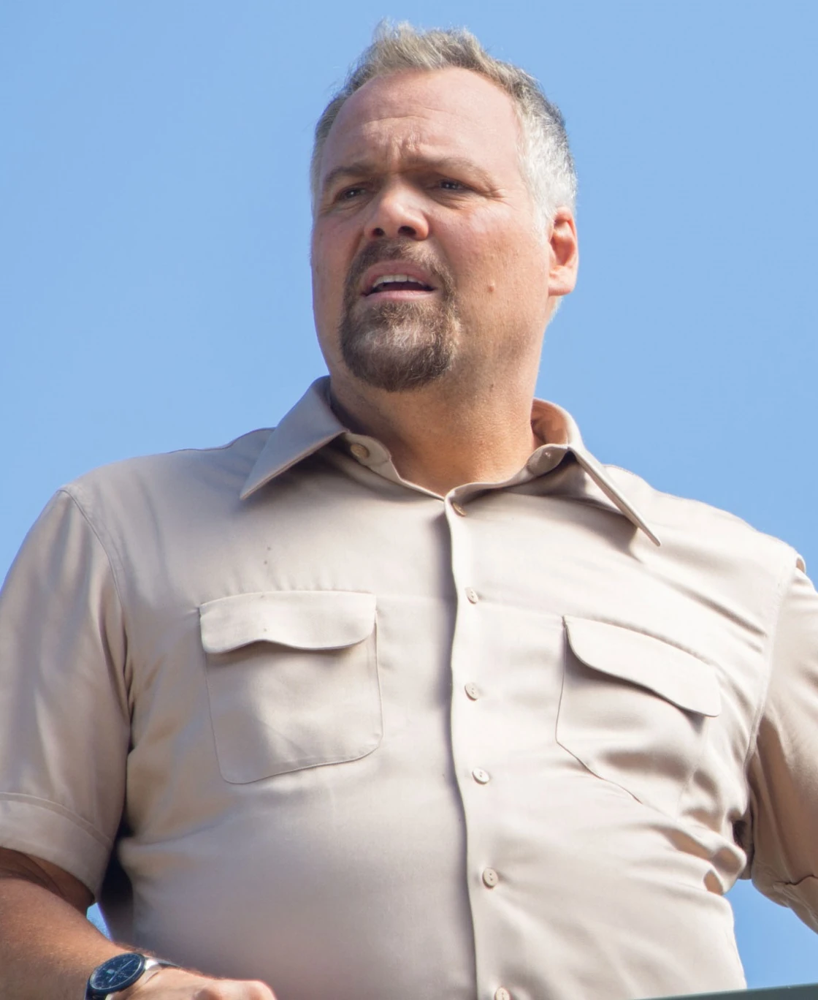
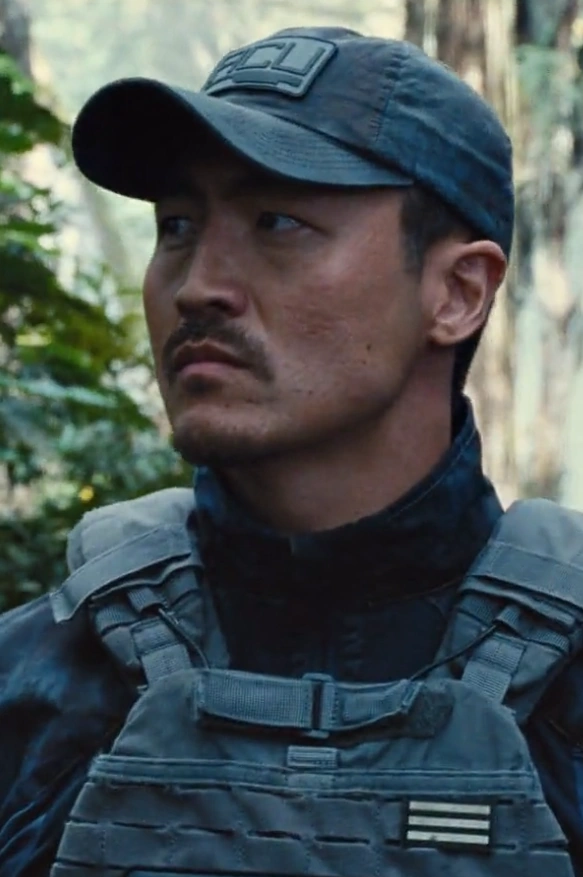

En Jurassic World podrás vivir una experiencia única rodeado de criaturas
prehistóricas. Nuestro parque ha sido revolucionado para ofrecerte una visita inolvidable.
Ya no solo verás dinosaurios, sino que también podrás alimentarlos manualmente
observar su comportamiento natural en un entorno seguro.
"La vida siempre encuentra el camino." - Dr. Ian Malcolm
Somos un equipo multidisciplinario de científicos, ingenieros y expertos en seguridad apasionados por traer de vuelta a la vida a los increíbles dinosaurios Los Científicos y cuidadores son Claire Dearing ella es la Jefa de operaciones y científica corporativa del parque Owen Grady es el Cuidador de raptores de jurassic world ,area de personal de seguridad se encuentra Vic Hoskins que es el Jefe de seguridad y Katashi Hamada Jefe de seguridad del equipo ACU de InGen.

